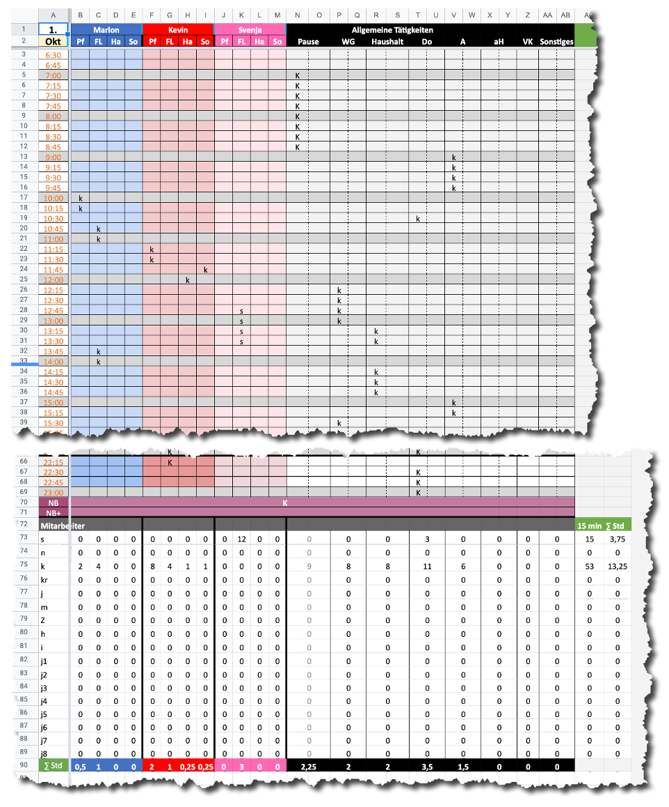
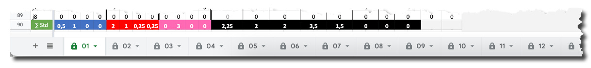
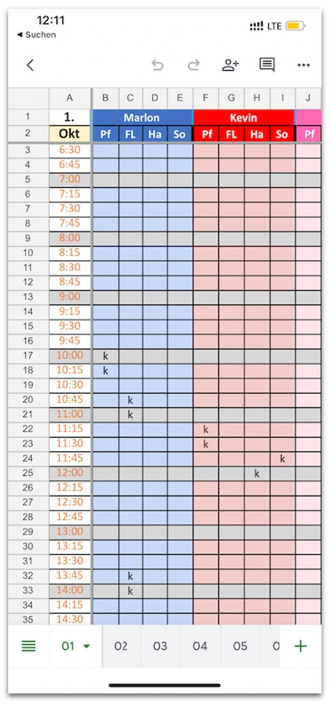
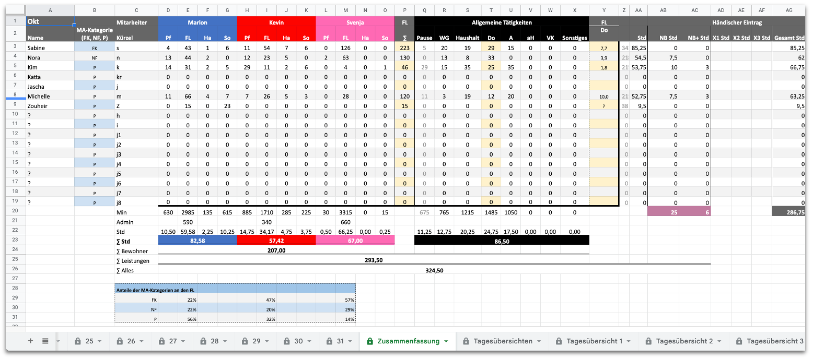

Zeiterfassung mit Google Sheets
Eine unserer Kundinnen hat eine kleine Wohngemeinschaft für “Menschen mit besonderen Anforderungen” gegründet hat. Sie stand am Anfang ihrer Geschäftstätigkeit und viel war noch nicht klar:
- Wieviele “Bewohner” würde sie betreuen?
- Wieviele Mitarbeiter würde sie beschäftigen müssen?
- Wie sollte die Zusammenarbeit am besten organisiert werden?
Grobe Ideen hatte sie natürlich schon und war damit ins kalte Wasser ihrer Gründung gesprungen. Doch dann stellte sich heraus, dass es schwer für sie war, den Überblick über die Tätigkeiten der Mitarbeiter zu behalten und daraus Abrechnungen abzuleiten, die bei den Kostenträgern akzeptiert würden. Die Zeiterfassung sollte unbedingt zeitnah professioneller werden.
In dieser Situation sprach sie Zeitgewinn Hamburg an, um mit uns Wege aus einer steigenden Belastung zu finden. Zunächst stand das Problem der Zeiterfassung im Vordergrund: Ohne Erfassung der Betreuungsleistungen im 15min-Takt, die Mitarbeiter für Bewohner der WG erbringen, konnten keine Einnahmen fließen.
Übliche Zeiterfassungen erwiesen sich leider als nicht tauglich für den Einsatz in diesem Umfeld; entweder war die Erfassung zu umständlich oder die Abrechnung nicht detailliert genug. Als Lösung blieb deshalb nur, eine eigene Zeiterfassung zu entwickeln.
Um einerseits die Kosten in einem bezahlbaren Rahmen und andererseits die Flexibilität hoch zu halten, haben wir uns dafür entschieden, die Zeiterfassung mit der Tabellenkalkulation Google Sheets zu realisieren. Excel schied aus, weil Mitarbeiter auch auf ihren Smartphones zwischendurch schnell mal angefallene Zeiten erfassen können sollten.
Zeiterfassung mit Google Sheets
Google Sheets wie Excel ist scheinbar ein Alleskönner. Tabellenkalkulationen halten — gleich nach SAP — die Wirtschaft am Laufen, könnte man meinen. Das hat Vor- und Nachteile.
- IT-Abteilungen sind davon eher nicht begeistert, weil dadurch Fachwissen unkontrolliert über unzählige, gar unbekannte Tabellen verteilt wird. Eine systematische Weiterentwicklung wird enorm erschwert.
- Fachabteilungen andererseits sind oft begeistert, weil sie selbst mit Tabellenkalkulationen pragmatische Lösungen implementieren können, deren professionellere Umsetzung durch die IT-Abteilung zu teuer geworden oder nicht genehmigt worden oder viel zu spät gekommen wäre.
Die Geschäftsführerin der kleinen Wohngemeinschaft befand sich in einer Situation wie die Fachabteilungen in Großunternehmen: Sie brauchte schnellstmöglich eine pragmatische Lösung, auch wenn die in mancher Hinsicht suboptimal sein würde. Besser Funktionalität jetzt als Perfektion erst nach einer Insolvenz. Ganz zu schweigen vom minimalen Budget, das ihr zur Verfügung stand.
Also haben wir mit Google Sheet darauf gesetzt, die wesentlichen funktionalen Anforderungen zu erfüllen:
- Erfassung von Arbeitszeiten pro Tag im 15min-Takt für mehrere Mitarbeiter für mehrere Bewohner.
- Zusammenfassung der Arbeitszeiten in einer Übersicht mit allen für die Abrechnung relevanten Zahlen.
- Bedienbarkeit auf dem Smartphone wie auf dem Tischrechner.
Leider ist die Zeiterfassung im Falle der Kundin sehr “fisselig”. Der administrative Aufwand in der Pflege ist groß. Deshalb sollte es den Mitarbeitern möglichst leicht gemacht werden, präzise zu notieren, wann sie bei wem was geleistet haben. Das geschieht nun in einem Tabellenblatt wie diesem pro Tag:

- Vertikal verläuft die Zeit in 15min Schritten.
- Horizontal geht es um die Art der Tätigkeit (z.B. “FL” für Fachleistung); einige werden direkt Bewohnern (z.B. “Marlon”) zugeordnet, andere fallen unabhängig an.
- Im Kreuzungspunkt zwischen Zeit und Tätigkeit tragen die Mitarbeiter ihre Kürzel ein.
Am Ende der Tagestabelle wird dann schon für den Tag zusammengerechnet, was jeder geleistet hat, z.B. wurde im Bild für “Marlon” 1 Stunde Fachleistung erbracht und Mitarbeiter “s” hat 3,75 Stunden gearbeitet.
Eine solche Tabelle gibt es für jeden Tag des Monats:

Das ist nicht sehr übersichtlich; die Benutzerfreundlichkeit lässt im Tagesgeschäft zu wünschen übrig — aber immerhin ist eine Bedienung auf dem Smartphone aus dem Stand möglich.

Vor allem jedoch: Die Entwicklungszeit betrug nur wenige Stunden.
Darin enthalten war auch eine Auswertung des täglichen Zeiterfassung:

Auf einen Blick sieht hier die Geschäftsführerin, wer bei wem wieviel welcher Leistung im Monat erbracht hat. Beispiele:
- Mitarbeiterin “Sabine” hat insgesamt bisher in dem Monat 85,25 Stunden gearbeitet.
- Für Bewohner “Kevin” wurden insgesamt 57,42 Stunden aufgewandt.
- In die allgemeine Tätigkeit “Haushalt” sind 20,25 Stunden geflossen.
- Fachkräfte (“FK”) haben bei “Svenja” 57% der Fachleistungen erbracht.
Aus dieser Übersicht leitet die Geschäftsführerin monatlich ihre Abrechnungen gegenüber den Kostenträgern ab. Außerdem dient ihr dieses “Dashboard” als Steuerungsinstrument für das Unternehmen, das ihr Belastungen, Leistungsverteilung und Bedarfe zeigt.
Entwicklungsprozess
Es wäre kostengünstiger gewesen, wenn das Unternehmen eine Standardsoftware hätte einsetzen können. Doch die Anforderungen der Geschäftsführerin waren so spezifisch, dass geringere Kosten mit vielen Lücken und/oder Workarounds hätten erkauft werden müssen. Deshalb hat sie sich darauf eingelassen, durch uns eine maßgeschneiderte Lösung für die Zeiterfassung mit Google Sheets entwickeln zu lassen.
Wir sind dabei ganz agil vorgegangen und haben inkrementell-iterativ entwickelt. Insgesamt gab es sieben Zyklen aus Anforderungsdefinition, Umsetzung und Vorstellung/Abnahme: Je Zyklus hat Andrea Kaden die Anforderungen zusammen mit der Kundin erhoben und dann an mich weitergegeben. Ich habe daraufhin 1-4 Stunden “programmiert”. Anschließend hat Andrea Kaden das Ergebnis der Kundin präsentiert und Feedback eingeholt. Stets war etwas noch nicht ganz passend und neue Ideen kamen der Kundin beim Ausprobieren.
Bis zur letzten “Runde” gab es nur Zeiterfassungsblätter für drei Tage und die Zusammenfassung. Auf die Weise konnte ich Änderungen schnell für alle Tage umsetzen. Erst ganz am Ende wurden aus drei Tagen 31, um eine Vorlage für Monate mit den verschiedenen Tagesanzahlen zu bekommen.
Die Kundin kopiert nun jeden Monat die Vorlage mit insgesamt 31+5 Tabellenblättern für einen frischen Start. Dass sie auf diese Weise keine Zusammenschau aller Daten über das ganze Jahr bekommt, weil jeder Monat in einem eigenen Google Sheet eingeschlossen ist, stört sie einstweilen nicht. Ob das je wichtig wird, steht in den Sternen. Auch das gehört zur Agilität: vorzeitige Optimierung vermeiden.
Wesentliches Kriterium für diesen Teil unserer Arbeit für die Kundin war, ihr zügig eine Lösung zu liefern, mit der sie so abrechnen kann, wie sie es braucht. Genau das leistet die Google Sheet “App”. Nicht mehr, nicht weniger. Die Kundin ist zufrieden; ihre Mitarbeiter kommen mit der Bedienung der Zeiterfassung mit Google Sheets genügend gut zurecht.
Fazit
Wir haben für die “Zeiterfassung” über die Arbeit in der Wohngemeinschaft ganz pragmatisch eine Lösung für hier und jetzt realisiert. Die ist hochgradig branchen-, sogar unternehmensspezifisch. Sie ist maßgeschneidert. Aber sie ist weit flexibler als üblicherweise Branchensoftware ist, weil sie mit einem “Programmierwerkzeug” entwickelt wurde, das ein sehr hohes Abstraktionsniveau bietet. Dadurch war die Entwicklung auch sehr schnell.
Angesichts der Unsicherheit darüber, was die Kundin denn wirklich braucht — sie wusste es selbst nur sehr grob —, haben wir das für den passenden Ansatz gehalten. Das Ergebnis ist deshalb vor allem funktional — in der Bedienung aber nicht geschmeidig. Die “App” ist vor allem ein handwerklicher Prototyp und kein stromlinienförmiges Industrieprodukt. Wie lange der der Kundin taugt, wird sich zeigen.
Nachhaltige Entwicklung mit einer Lösung “für die Ewigkeit” wäre für ihre Situation nicht das Richtige gewesen. Dafür wäre viel mehr Klarheit in den Anforderungen nötig. Nachhaltigkeit hat Voraussetzungen und ist kein Selbstzweck, auch wenn der Begriff derzeit in aller Munde ist und pauschal mehr gefordert wird.
Im Prozess der Entwicklung einer Lösung konnten wir Unklarheiten mit der Kundin schrittweise ausräumen. Dabei hat uns Google Sheet sehr geholfen. Dem Geschäft der Kundin hat gedient, dass eine Lösung quasi “im Selbstbau” möglich war, ohne den ganzen Overhead einer “richtigen” Softwareproduktion. Der Geschwindigkeit hat dabei gedient, dass sie persönlich eng eingebunden war.
Wir freuen uns, pragmatisch eine Lösung geliefert zu haben. Ob es beim nächsten Kunden wieder Google Sheet sein sollte, wird sich zeigen. Wir sind da nicht festgelegt. Tool und Lösung müssen zur Situation passen.
Dieser Artikel erschien zum ersten Mal in meinem Newsletter bei Substack hier im October 2022. Dort finden Sie auch weitere Artikel und können den Newsletter per E-Mail abonnieren.
Weitere Artikel

Regeln für KI im Office
ChatGPT & Co haben sich schnell in die Herzen und Alltag von vielen Menschen im Berufs- und Privatleben gespielt. Diese neuen Werkzeuge eröffnen uns viele Chancen, nicht nur effizienter zu werden, sondern auch kreativer. Aber …

KI als Copilot für die Assistenz
KI in Form von ChatGPT & Co sind hervorragende neue Werkzeuge im Office-Alltag, um produktiver und ja, auch kreativer, zu werden. Neugier statt Angst ist angezeigt im Umgang mit diesen Werkzeugen, die wie andere Werkzeuge auch …